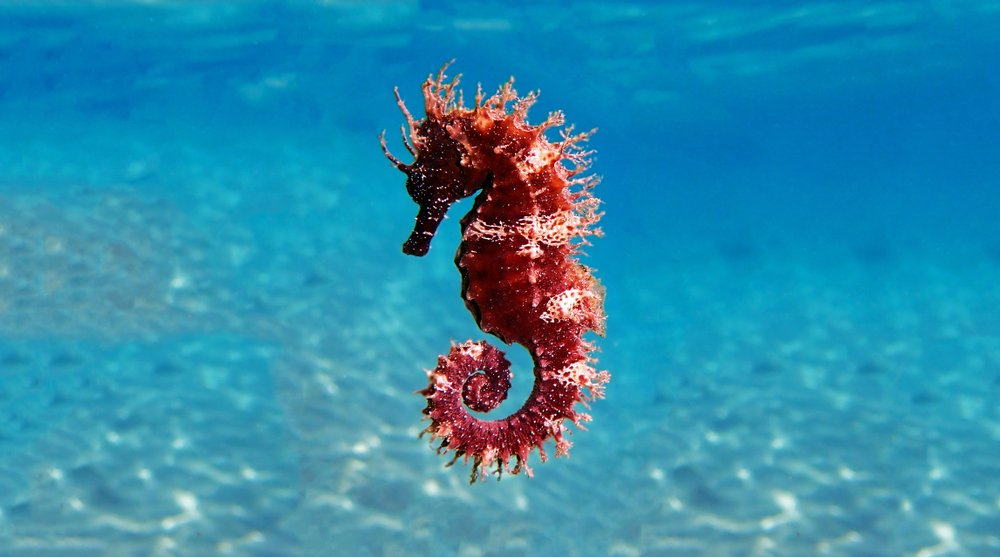

“Some people talk to animals. Not many listen though. That's the problem.”
our Animals
Giraffe
Giraffe grow about 4 feet (1.2 meters) in their first year of life.
A newborn giraffe is about 6 feet (1.9 meters) tall at birth and weighs
about 150 pounds (68 kilograms).

Seahorses
Seahorses are tiny fishes that are named for the shape of their head,
which looks like the head of a tiny horse. There are at least 25 species of seahorses.

Amur Leopard
Slowly stalking down the snowy hillside, the Amur leopard watches its prey through
the trees.
one of its few remaining food sources
during the cold Russian winter.

Black Rhinoceros
Black rhinoceroses have a sort of attack-first-and-ask-questions-later attitude.
When a rhino catches the scent of a human or anything else unfamiliar,
it is likely to charge. Rhinos can't see well, so they sometimes charge.

Indian Peafowl
Indian peafowl are a species in a group of birds called pheasants.
The males are called peacocks, while the females are called peahens.
Together, they are peafowl.

Bald Eagle
A bald eagle's white head may make it look bald. But actually
the name comes from an old English word, "balde," meaning white.
These graceful birds have been the national symbol of the United States since 1782.
South-Africa-Elephant
In South Africa the Addo Elephant and Kruger National Park protect
large herds. Due to rigorous conservation measures the Elephant
population in South Africa has grown
Chimpanzees
Chimpanzees are omnivores, meaning they eat both plants and animals.
Young chimpanzees learn from observing their mothers and other adults which
foods are safe to eat and where ripe food is located.

Kangaroo
Kangaroos possess powerful hind legs, a long, strong tail, and small front legs.
Kangaroos belong to the animal family Macropus, literally "big foot."
Thanks to their large feet, kangaroos can leap some 30 feet
Owl
Owls are birds in the order Strigiformes. There are 200 species, and they are all
animals of prey. Most of them are solitary and nocturnal; in fact, they are the
only large group of birds which hunt at night. Owls are specialists night-time hunters.
Redpanda
The red panda is slightly larger than a domestic cat with a bear-like body and
thick russet fur. The belly and limbs
are black, and there are white markings on the side of the head and above its small eyes.
Tiger
The tiger (Panthera tigris) is the largest living cat species and a member of the
genus Panthera. It is most recognisable for its dark vertical stripes on orange fur with a white
underside.